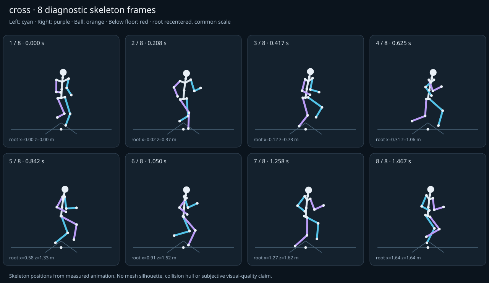

כל הקליפים · תצוגת התנועה · JSON מקורי
ציון 90.7 · כיסוי 100%
נתוני motion-qa-v1 המקוריים; עיצוב הדוח בלבד הותאם לחבילה. נקודות הסוליה נמדדות בתרחיש שחקן חיצוני מוצהר; Root בנכס נשאר קבוע.

| מדד | מצב | ערך | ציון | ראיות |
|---|---|---|---|---|
| החלקת רגליים | ירוק | 0.000306 | 99.39 | ראיות המדידה{
"coordinateSpace": "native GLB plus explicitly declared external actor position and heading, applied once",
"supportSource": "declared",
"windows": 5,
"samples": 149,
"maxDriftMeters": 0.000516,
"p95SpeedMetersPerSecond": 0.035186,
"worst": {
"bone": "LeftFoot",
"t": 1.35,
"start": 1.333333,
"end": 1.466667,
"driftMeters": 0.000516
}
} |
| חדירה לרצפה | ירוק | 0 | 100 | ראיות המדידה{
"samples": 3620,
"floorY": 0,
"probeKind": "declared sole probes plus skeletal joint centers (no mesh surfaces)",
"maxDepthMeters": 0,
"worst": {
"t": 0,
"bone": "LeftFoot",
"depthMeters": 0,
"y": 0.004
}
} |
| קפיצות פוזה | צהוב | 1.026212 | 79.48 | ראיות המדידה{
"adjacentPairs": 180,
"observations": 3060,
"maxDegrees60Hz": 9.143713,
"maxMarkerStepHeight60Hz": 0.041048,
"maxRootStepHeight60Hz": 0.017751,
"worst": {
"ratio": 1.0262118120941155,
"t": 0.766667,
"previousTime": 0.758333,
"bone": "RightFoot",
"markerStepHeight60Hz": 0.041048,
"degrees60Hz": 4.205805
}
} |
| חריגות אנטומיות | ירוק | 0 | 100 | ראיות המדידה{
"testedFrames": 181,
"affectedFrames": 0,
"checks": 3077,
"maxLimbFlexionDegrees": 108.365412,
"maxRelativeSegmentLengthChange": 0,
"hingeDirectionChecked": true,
"axialTwistChecked": false,
"violations": []
} |
| מגע בכדור | לא חל | — | — | ראיות המדידה{} |
| כניסה ויציאה מול המתנה | צהוב | 1.939087 | 65.91 | ראיות המדידה{
"entry": {
"ratio": 1.9390868770999068,
"t": 0,
"idleTime": 3.9,
"markers": 17,
"rmsPositionHeight": 0.077563,
"rmsRotationDegrees": 26.834006,
"rmsVelocityHeightPerSecond": 0.937464,
"velocityEvaluated": true
},
"exit": {
"ratio": 1.9319830539749578,
"t": 1.466667,
"idleTime": 3.9,
"markers": 17,
"rmsPositionHeight": 0.077279,
"rmsRotationDegrees": 26.983575,
"rmsVelocityHeightPerSecond": 0.960904,
"velocityEvaluated": true
},
"worstEndpoint": "entry",
"alignment": "horizontal root translation; raw asset poses used when provided"
} |
| מהירות גוף מול צעדים | ירוק | 0.109369 | 89.06 | ראיות המדידה{
"rootSource": "sampled presented root",
"rootSpeedMetersPerSecond": 1.799994,
"observedRootSpeedMetersPerSecond": 1.799994,
"referenceRootSpeedMetersPerSecond": 1.799994,
"supportSource": "declared",
"backwardSweepSpeedMetersPerSecond": 1.603129,
"cadenceStepsPerSecond": 2.72727,
"impliedStrideMeters": 1.175629,
"rootStrideMeters": 1.319996,
"supportSweeps": [
{
"bone": "LeftFoot",
"start": 0,
"end": 0.16,
"duration": 0.16,
"sweepMeters": 0.209349,
"speedMetersPerSecond": 1.308428
},
{
"bone": "LeftFoot",
"start": 0.6,
"end": 0.893333,
"duration": 0.293333,
"sweepMeters": 0.525216,
"speedMetersPerSecond": 1.790508
},
{
"bone": "LeftFoot",
"start": 1.333333,
"end": 1.466667,
"duration": 0.133333,
"sweepMeters": 0.173118,
"speedMetersPerSecond": 1.298383
},
{
"bone": "RightFoot",
"start": 0.233333,
"end": 0.526667,
"duration": 0.293333,
"sweepMeters": 0.477362,
"speedMetersPerSecond": 1.627371
},
{
"bone": "RightFoot",
"start": 0.966667,
"end": 1.26,
"duration": 0.293333,
"sweepMeters": 0.470251,
"speedMetersPerSecond": 1.603129
}
]
} |
| סימטריה | ירוק | 0 | 100 | ראיות המדידה{
"mode": "structural",
"modeSource": "declared",
"structuralMismatch": 0,
"segments": [
{
"segment": "Arm-ForeArm",
"mismatch": 0
},
{
"segment": "ForeArm-Hand",
"mismatch": 0
},
{
"segment": "UpLeg-Leg",
"mismatch": 0
},
{
"segment": "Leg-Foot",
"mismatch": 0
}
],
"motionRmsHeight": null,
"worstMotion": null,
"bilateralPoseRmsHeightUnscored": 0.181319,
"note": "One-sided authored actions are checked for structural symmetry only."
} |